Pas je molen aan
molenblok aanpassen, zodat
je het kunt gebruiken om verschillende vormen te tekenen.
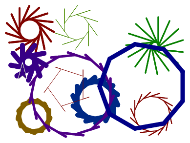
Meerdere invoer-variabelen toevoegen
Bedenk hoe je in de vorige les jouw oorspronkelijke molenscript algemener maakte: je voegde de invoer-variabele wieken toe. Deze variabele controleert de draaihoek van de sprite. Door meer invoer-variabelen toe te voegen, kun je ook andere aspecten van je programma veralgemeniseren.
- Open dan je H1L3-Molen project.
- Experimenteer met de invoer voor het tweede
neem..stappenblok in jemolenblok zoals hieronder.
-
 Doe eerst een voorspelling. Wat denk je dat er zal gebeuren?
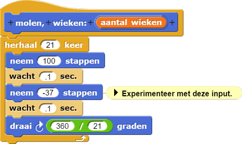
Doe eerst een voorspelling. Wat denk je dat er zal gebeuren?
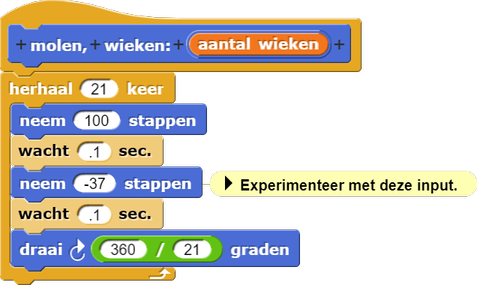
- Probeer dan verschillende getallen tussen -100 en 0 als invoer.
-
 Wat gebeurde er? Komt het overeen met je voorspelling? Hoe beïnvloedt deze invoerwaarde
het gedrag van de sprite?
Wat gebeurde er? Komt het overeen met je voorspelling? Hoe beïnvloedt deze invoerwaarde
het gedrag van de sprite?
-
-
Voeg een tweede invoer-variabele toe om de hoeveelheid "backing up" te regelen die
de sprite doet voor elke draai door de volle 360°.
- Open het script van je
molenblok om het te bewerken.
Klik op het + teken aan het eind van de naam van het blok om een invoer-label toe te voegen. Kies Titel in plaats van Invoernaam.
Typbackup:zoals hieronder en klik op OK.
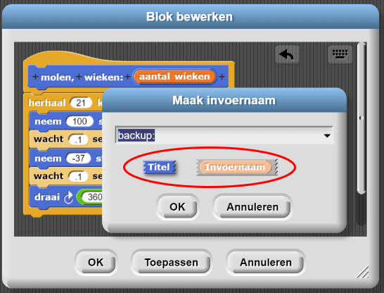
- Klik dan weer op het + teken aan het eind, om nog een invoer-variabele
toe te voegen.
Kies Invoernaam en noem hetbackup. - Sleep de
backupvariabele weg. Plaats deze variabele op de juiste plek in demolencode en druk op OK. - Zorg dat het nieuwe invoerbalkje in het
molenblok zich gedraagt zoals je hem hierboven hebt aangepast.
- Open het script van je
- Verander het
molenscript zodanig dat het een positieve waarde accepteert (tussen 0 en 100) voorbackup.
Debugging Tip: Organiseer je code
Voorkom onnodige bugs en organiseer je code door blokken die je niet gebruikt te verwijderen.
Hieronder staan een voorbeeld van rommelige code en een voorbeeld van georganiseerde code met opmerkingen.
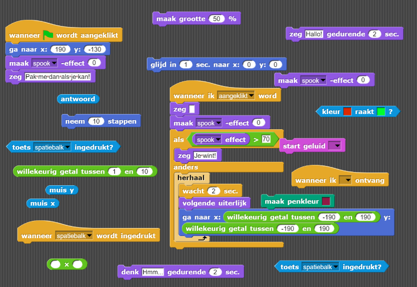
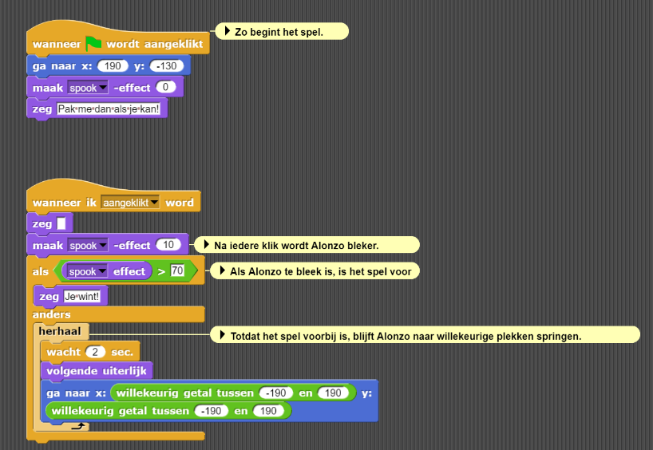
Laat Snap! je helpen en gebruik de opruimen-optie.
Klik met je rechtermuisknop in het werkblad en
kies 'opruimen'.
Nu worden de blokken automatisch verticaal geordend.
Ook zijn er drie manieren om elementen uit je speelveld te verwijderen. Bekijk het filmpje hieronder.
- Verwijder blokken en scripts door ze uit het werkblad te slepen en terug te plaatsen in de paletten aan de linkerkant.
- Een blok/script "verwijderen" is ook een goede optie.
- De optie "verwijder blok definitief" is anders. Deze optie verwijdert permanent je speciaal aangemaakte blok en alles wat daarbij hoort binnen je project.
- Voeg een andere invoer toe en noem het
grootte. Zo regel je de invoer voor het eersteneem stappenblok.
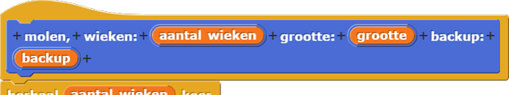 - Probeer verschillende invoeren uit in je
molenscript...
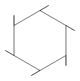
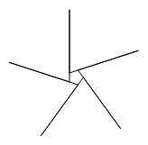 -
Bespreek welke invoerwaarden je een veelhoek of een sterretje geven.
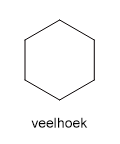 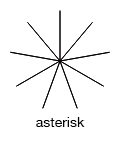
wachtblokken
in het molenscript.
- Vind invoeren voor
molenwaarvoor het resultaat op een cirkel lijkt.
- Maak een nieuw script waarmee je een molen probeert te tekenen die meer op een échte molen lijkt:
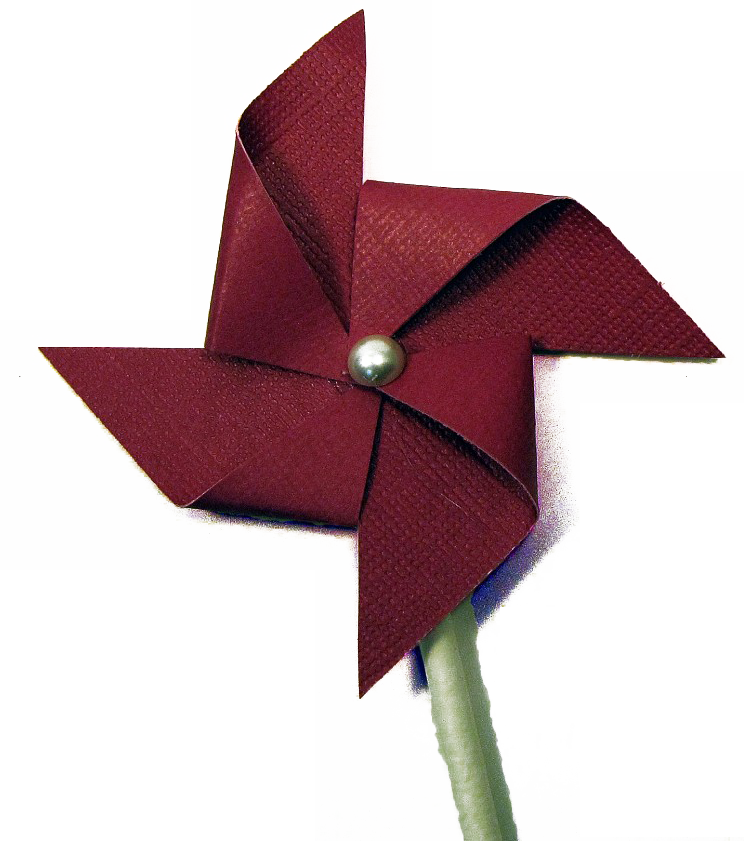
Sla je project eerst op; je zult het
molenblok dat je al hebt gemaakt in de toekomst nog nodig hebben.Het hoeft niet precies op de foto te lijken, maar elke arm van de molen in de afbeelding is in feite twee driehoeken.
Het blok komt waarschijnlijk van pas.
Copyright paper pinwheel Victoria Hudgins 2010. Met toestemming gebruikt.